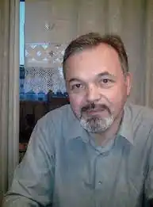
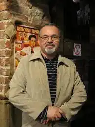

Народився 5 вересня 1958 року у місті Києві у родині кінорежисера, Народного артиста України, лауреата Національної премії ім. Т. Шевченка Денисенка Володимира Терентійовича, і актриси, Народної артистки України Наум Наталії Михайлівни.
У 1975 році закінчив київську середню школу № 92 ім. Івана Франка і вступив до Київського державного університету ім. Тараса Шевченка на факультет кібернетики. Впродовж навчання на факультеті, вже перебуваючи на другому курсі, створив студентський аматорський театральний гурток під назвою "Біля колон" і поставив два спектаклі "Двадцять хвилин з ангелом" за О.Вампіловим та "Міщанин-шляхтич" за Ж. Мольєром.
У 1978 році вступив на акторський факультет Всесоюзного інституту кінематографії у Москві на курс Народного артиста СРСР Сергія Бондарчука, який закінчив у 1981 році. У 1981—2002 рр. (з перервами) — режисер і актор на кіностудії художніх фільмів ім. О. Довженка. Починаючи від 8 березня 2000 року до 3 серпня 2005 року працював на телекомпанії "Київ" як автор і ведучий щоденної телепрограми "Кіносалон Олександра Денисенка", автор та диктор анонсів кінофільмів та завідувач відділу кінопрограм. Визначав творчі напрямки кіномовлення телеканалу. Директор студії "Укртелефільм" (1994—1995 рр.; за даними knpu.gov.ua — з 1994 по 1998 рік) Директор з творчих питань телекомпанії "Глас" (2005—2010 рр.) Заступник директора радіо "Культура" Українського радіо (УР-3) (2010 р. — до жовтня 2014 р.). Директор радіо "Культура" Українського радіо (УР-3) — (з жовтня 2014 р. — до нинішнього часу). Літературна діяльність: З 1988 року пише прозу і друкується в українських часописах, літературних збірках та газетах. Автор романів, повістей, оповідань, кіносценаріїв та п'єс. Пише вірші, які не пропонує жодному видавництву, оскільки вважає, що майстерністю римувати мусить володіти і використовувати, як літературний тренінг, у своїй роботі кожен письменник. Повість "Глина" опублікована у журналах "Українські проблеми" (1994. — Ч.3: перший розділ) та "Київ" (1996. — Ч.1-2: обидва розділи), повість "Потяг" опублікована у "Кур'єрі Кривбасу" (1997. — Ч. 85-86), оповідання "Запах зломленої квітки" опубліковане у "Кур'єрі Кривбасу (1994. — Ч.17), оповідання "Залізна баба" опубліковане у газеті "Нєзавісімость" українською мовою (14 червня 1996 р.). У співавторстві з Аллою Тютюнник написав повість "На шляху підземної ріки", що була надруковано на сторінках журналу "Київ" (1990. — Ч.9) та у збірці "Романи і повісті" у 1989 році. У часописі "Кур'єр Кривбасу" поміщено уривок з його роману "Комедія інстинкту" (1999. — Ч.119-120) та скорочений варіант роману "Містич" (2002. — Ч. 167—168), повість "Вітя Давида — людина ідеї" у часописі "Кур'єр Кривбасу" (2004. — Ч.188), оповідання "Великий Іван" ("Кур'єр Кривбасу" (2008. — Ч.255). П'єса "Оксана" про останні роки життя і таємницю смерті Т. Шевченка опублікована у "Кур'єрі Кривбасу" (2002. — Ч.148) та у збірці "Наша драма" (грудень 2002 р.). Ця п'єса поставлена у Національному академічному театрі ім. І. Франка у 2003 році під назвою "Божественна самотність". Комедія-мюзикл "Травень-вересень" опублікована у "Кур'єрі Кривбасу" (2005. — Ч.187). Оповідання "Душа ріки" перекладене німецькою мовою й видрукуване в німецькій антології химерної літератури "Die Stimme des Grases" (2000 — Brodina Verlag), у "Кур'єрі Кривбасу", газеті "Слово", а також видане у антології "Приватна колекція" (2002. — Львів.). У 2008 році у Літературній агенції "Піраміда" вийшла книжка прози "Душа ріки". На початку 2009 р. у видавництві Грані-Т" вийшла друком книга "Сердечний рай, або Оксана" про останні роки життя Т. Шевченка, у основу якої покладено текст п'єси "Оксана" О. Денисенка, а також опубліковано невідомі документи з життя Т. Шевченка та коментарі істориків, мистецтвознавців та діячів культури. Книга Олександра Денисенка "Сердечний Рай… або Оксана" одержала друге місце на VI-му Міжнародному конкурсі книги у Москві у номінації "Співдружність". У 2009 році О. Денисенко за кіносценарій "Оксана" одержав ІІ премію всеукраїнського літературного конкурсу "Коронація слова". У 2010 р. у видавництві "Грані-Т" вийшов роман-фентезі О. Денисенка "Межник. На грані світла і тіні". 6 березня 2012 р. О. Денисенко переміг у Всеукраїнському конкурсі літературних сценаріїв художнього фільму про Тараса Шевченка до 200-ліття від дня народження поета. За надання його сценарію "Прощання з пустелею" першого місця журі конкурсу на чолі з французьким кінокритиком Любомиром Госейко та українським кінооператором Юрієм Гармашем проголосувало одноголосно. Автор циклу "Історія християнської Церкви", який складається зі 150 драматичних есеїв, поставлених на Українському радіо у 2012—2013 рр. і виданих окремим накладом з 6 CD-дисків у 2013 р. Автор трьох сценаріїв літературно-драматичних радіопостановок з життя Тараса Шевченка: "Походження", "І не чорнявий, і не білявий", "О, мій сопутниче святий!", поставлених на Національному радіо у 2014 р..